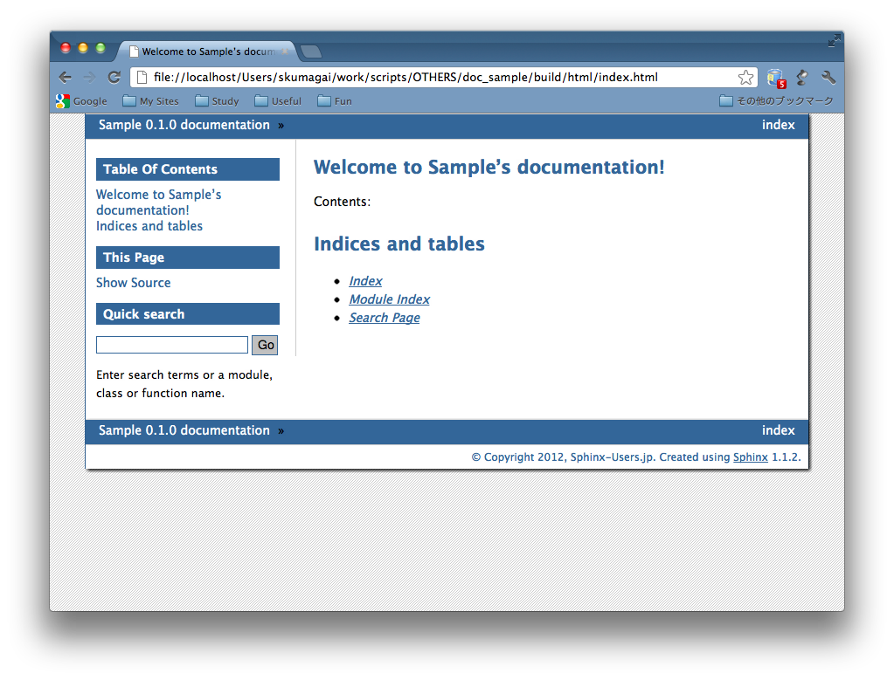

Though I want to create theme,
what a structure it is?
Structure of HTML theme is like this:
pyconjp
+ theme.conf
+ layout.html
:
+ static
+ pyconjp.css_t
+ pyconjp_2012_logo.png
theme.conf
[theme]
inherit = basic
stylesheet = pyconjp.css_t
pygments_style = friendly
[options]
rightsidebar = false
[theme] Section
[theme] Section - inherit
[theme] Section - stylesheet
[theme] Section - pygments_style
[options] Section
HTML template file
{#
default/layout.html
~~~~~~~~~~~~~~~~~~~
Sphinx layout template for the default theme.
:copyright: Copyright 2007-2011 by the Sphinx team, see AUTHORS.
:license: BSD, see LICENSE for details.
#}
{% extends "basic/layout.html" %}
{% if theme_collapsiblesidebar|tobool %}
{% set script_files = script_files + ['static/sidebar.js'] %}
{% endif %}
HTML template file
Static files
Stylesheet
What is the “Static template”?
pyconjp.css_t
:
div.sphinxsidebar {
margin: 0;
padding: 0.5em 15px 15px 0;
width: {{ theme_sidebarwidth|toint - 20 }}px
float: right;
font-size: 1em;
text-align: left;
}
:
Syntax:
* Embed a variable which enclosed with double curly braces.
* Specify a variable name which prefixed with "theme_".
theme.conf
[theme]
inherit = basic
stylesheet = pyconjp.css_t
pygments_style = sphinx
[options]
sidebarwidth = 170
pyconjp.css
:
div.sphinxsidebar {
margin: 0;
padding: 0.5em 15px 15px 0;
width: 150px
float: right;
font-size: 1em;
text-align: left;
}
:
* It can use not only numeric, also string.
* It can use filter as same as HTML template.
It enclose these files with one directory:
pyconjp
+ theme.conf
+ layout.html
:
+ static
+ pyconjp.css_t
+ pyconjp_2012_logo.png
And, put it under the document root of Sphinx:
some_document
+ static
+ _templates
+ conf.py
+ index.rst
+ pyconjp <-- New!
In conf.py, specify the html_theme_path to current directly, type “make html”, and...
# Add any paths that contain custom themes here, relative to
# this directory.
html_theme_path = ["."]
You can see a custom themed document :-)
All the contents of this session are included in HTML theming support section of official document.
Please refer to document and try to modify a theme.